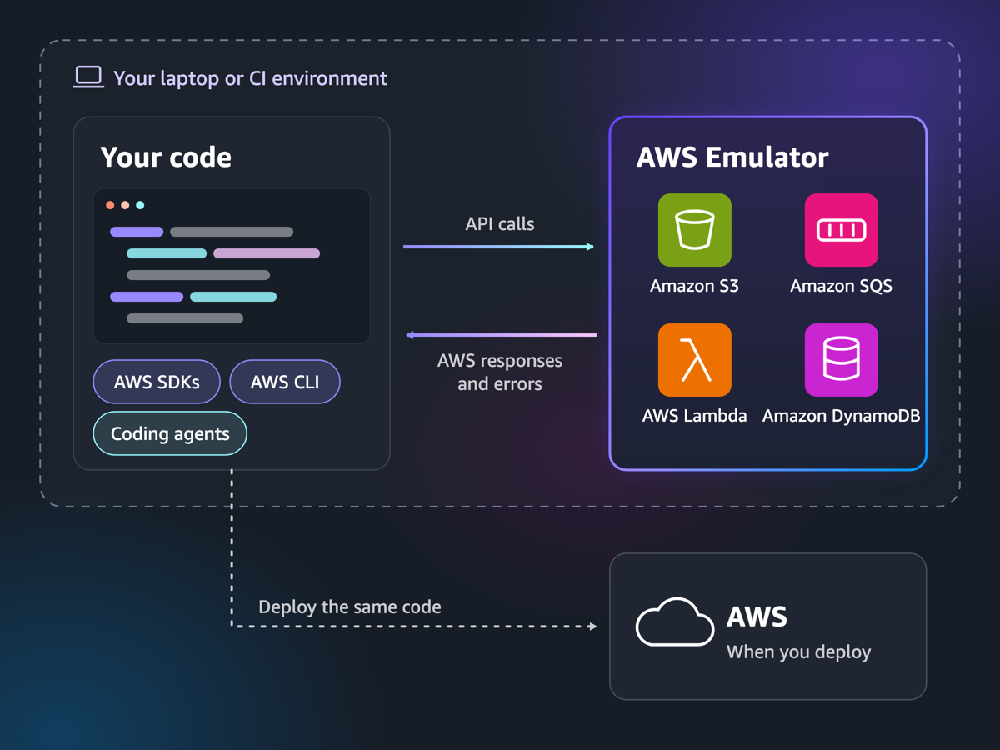

AWS now runs on your laptop
· 4 min read
Here is how testing cloud code usually goes: you write a few lines, deploy them, wait, watch a log, find a typo, fix it, and deploy again. Ten minutes per mistake. Most of that time you are not thinking about your code. You are waiting.
On 11 November 2026, AWS released a tool that deletes the wait. It is called AWS Emulator, and it runs AWS on your own machine.
Quick Summary (The Short Version)
-
•
Runs AWS locally: Simulates S3, DynamoDB, SQS, and Lambda on
127.0.0.1with millisecond response times. - • No AWS account needed: Completely free, open-source, and runs offline with zero cloud charges.
- • Fast feedback loop for AI agents: Coding agents can test SDK calls, catch typos, and self-correct errors in milliseconds instead of waiting on 10-minute deploys.
What an emulator actually is
An emulator is a stand-in. It listens for the same requests real AWS listens for, then answers them itself.
So your code does not change. You keep using the same SDK, the same CLI, the same calls. Only the address changes: instead of sending requests to AWS in the cloud, you send them to a small program running on 127.0.0.1.

That is the whole idea. One arrow points at a local program, the other points at the cloud. Your code sits on the left and never knows the difference.
Why this is a big deal for coding agents
Agents are fast at writing code and slow at waiting for deploys. They also make mistakes in batches, so a slow feedback loop makes them expensive.
Now picture an agent that needs a database table. It creates one in the emulator, runs a query, sees the error, fixes the code, and runs it again. All of that happens in seconds, offline, with no credentials and no bill. Only when the code works does anything reach AWS.
The isolation matters as much as the speed. Every copy of the emulator gets its own port, its own keys, and its own memory. So two agents, or two CI jobs, or your test suite and your agent, can all run at the same time without stepping on each other. When you stop it, the state is gone - a clean slate every time.
How close is it to the real thing?
Close for the operations it supports, and honest about the rest.
- Valid calls return the same result as AWS. Invalid calls return the same errors.
- Anything it has not built yet returns
501 Not Implementedinstead of pretending to work. - Its services are generated from the same public API models that power the AWS SDKs, and behaviour is filled in release by release.
- Each release publishes a fidelity report - a scorecard of how closely each service behaves like the real one.
That last point is the one to check before you rely on it. "Supported" is per operation, not per service. If your code depends on one specific DynamoDB behaviour, look it up in the report first.
Getting started
There is no graphical interface. It is a small server, so the setup is short:
- Install it. On Linux, use the RPM or Debian package. On macOS or Windows, run the provided Dockerfile.
- Start it. The
aws-emulatorprogram serves HTTPS on127.0.0.1:9297with a self-signed certificate, and gives you the credentials to use. - Point your code at it. Set the endpoint and keys as environment variables, then run your code exactly as before.
With an SDK, that is usually one argument:
import boto3, os
dynamodb = boto3.client(
"dynamodb",
endpoint_url=os.environ["AWS_ENDPOINT_URL"], # the emulator, not AWS
)If you work with an AI coding agent, AWS also publishes a skill that sets all of this up for you:
aws agent-toolkit add-skill --skill-name aws-emulator --region us-east-1There is a third mode for Rust developers: the emulator can be compiled straight into your test binary. No port, no certificate, no environment variables. The catch is build cost - a cold build needs roughly 100 GB of disk and a fast multi-core machine.
What it is not
- Not production. It holds state in memory, so everything disappears when you stop it.
- Not a security test. Do not use it to check IAM policies or permissions behaviour.
- Not complete. New services appear quickly, but behaviour lands over time. The 501 response is your signal.
- Not region-aware. It does not care which region you ask for.
How it compares to LocalStack
If you have tested AWS locally before, you probably used LocalStack, the third-party emulator that has done this job for years. AWS Emulator is the first-party version of the same idea, with one clear advantage: AWS owns the API models, so new services show up in it as soon as they are published. Its source is released under CC0, which puts it in the public domain.
Whether that is enough to switch depends on what you need. For a quick local loop on S3, SQS, Lambda or DynamoDB, it is a very short setup. For broad service coverage today, check the fidelity report against your stack before you move anything.
Frequently Asked Questions
What is AWS Emulator?
AWS Emulator is a free, official local development tool that lets developers run and test AWS services like S3, DynamoDB, SQS, and Lambda locally on 127.0.0.1 without an AWS account or cloud deploy.
Does AWS Emulator require an AWS account or billing?
No. AWS Emulator runs entirely on your local machine with dummy credentials, incurring zero cloud charges and requiring no AWS account.
Why is AWS Emulator important for AI coding agents?
Coding agents write code fast but wait slowly for cloud deploys. Running AWS locally responds in milliseconds, allowing AI agents to create tables, test queries, and self-correct errors in seconds without cloud costs.
The takeaway
The interesting part is not that you can fake S3 on a laptop. People have done that for years. The interesting part is that the fast feedback loop is now the default path, even for agents: write, test, fix, repeat - all locally - and only deploy when the code already works.
Try it on one small thing this week. Pick the AWS call you deploy most often, point it at the emulator, and see how much of your day was spent waiting.
Links: the announcement, the documentation, the source on GitHub.